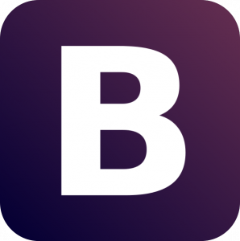
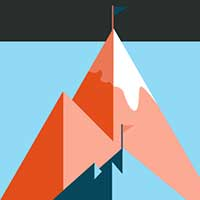

Servicios
Mi propósito es equilibrar el punto de vista de la usabilidad, que se centra en la funcionalidad y la presentación efectiva de la información con la perspectiva puramente estética.
Diseño Web
Diseño pensando en la facilidad del usuario como objetivo y en el contenido como protagonista sin olvidar el aspecto visual y la imagen de marca.
Desarrollo Web
El diseño para la web y dispositivos se hace realidad codificando en lenguajes de marcado y de programación como HTML5, CSS3, y JavaScript.
Web Adaptable
El modo de ver la web ha cambiado y no hay vuelta atrás, una web actual debe de adaptarse cualquier dispositivo, hacer zoom no es divertido!
Web Standard
Que elementos pueden marcar la diferencia en una página web?
Diseño exclusivo
Por que la primera impresión es lo que cuenta.
Para crear una imágen limpia y atractiva utilizo:
- Tipografías de Fontsquirrel o de Google fonts.
- Iconografías de Icomoon o Weloveicons.
- Para hacer un buen uso del color, utilizo: Adobe Kuler.
Ok, También tengo conocimientos básicos de tipografía, psicología de color y teoría del diseño, composición, simetría, armonía, contraste etc..
Diseño adaptable
A día de hoy es inconcebible que una web no esté adaptada a dispositivos móviles.
Cuál es mi secreto para crear diseños adaptables?
Foundation5
El framework front end responsive más avanzado del mundo.
El framework front end responsive más avanzado del mundo.

Bootstrap for Sass
El framework más popular para desarrollar proyectos responsive movile first en la web.
El framework más popular para desarrollar proyectos responsive movile first en la web.

Sassaparilla
Una forma de iniciar proyectos de diseño web que aprovecha la potencia de Sass y Compass.
Una forma de iniciar proyectos de diseño web que aprovecha la potencia de Sass y Compass.
Bourbon Neat
Un ligero y semántico framework para Bourbon y Sass.
Un ligero y semántico framework para Bourbon y Sass.
Ok, Estás herramientas facilitan mucho el trabajo pero sin conocimientos de CSS, SASS y uso de Media Queries etc.. no harías gran cosa con ellas.
Elementos interactivos
Los elementos interactivos normalmente se crean con Javascript y jQuery y mejoran considerablemente la experiencia de usuario.
Que elementos interactivos puedo incluir en tu página web?
- Galerías de fotos
- SlideShows
- Bloques expandibles
- Carrousels
- Acordeones
- Modales
- Pestañas
Google maps
Esto es opcional pero si necesitas que tus clientes te encuentren físicamente, es recomendable incluir Google Maps en tu formulario de contacto.
Velocidad!
El mundo de la web requiere velocidad, la gente no va a tener paciencia para esperar a que carge una web lenta a causa de fotos pesadas o un código sin optimizar.
Utilizo herramientas como PageSpeed Insights o YSlow y sigo sus sugerencias.
Estrategía de Marketing Online
Ok, soy un Geek y mi pasión es crear sitios web responsive alucinantes, pero comprendo si esto no te excita demasiado.
Seguramente, estás más interesado en:
- Dar a conocer tu negocio a clientes potenciales.
- Aparecer en los primeros puestos en las busquedas de Google.
- Mejorar tu imágen de marca.
Resumiendo, que el dinero y energía que has invertido en la creación de tu sitio web se vea recompensado en más clientes o más ventas.
No soy experto en maketing online, ni es mi intención convertirme en uno, pero si hay cuatro cosas básicas que puedo hacer por ti al respecto:
- Asesoramiento SEO Básico.
- Incluir Google analytics en tu página web.
- Dar de alta tu web en los principales buscadores, Google, Bing y Yahoo.
- Añadir palabras clave.
Te voy a contar un secreto, lo mejor que puedes hacer por mejorar el SEO de tu web es crear contenido relevante.
Web avanzada
En la sección Web Standard he nombrado todos los elementos básicos que a mi parecer debe de incluir por defecto cualquier página web moderna y es muy posible que con ellos ya tengas cubiertos los objetivos que tienes para tu web, pero si quieres ir más allá, podemos hacer mucho más, el cielo es el límite!
Diseño Web con Wordpress
La ventaja de utilizar un CMS (Content Management System), es que tu mismo podrás actualizar y gestionar los contenidos de tu web desde el panel de administración, sin saber nada de programación.
Cualquier tipo de web que necesite actualizarse de forma fácil e intuitiva puede hacerse en wp, ya sea un sitio comercial, informativo o una tienda online y por supuesto también puedes hacer un Blog!
Tienda Online
Abre tu negocio 24 horas al día!!
Estoy especializado en Wordpress, y ahora gracias al pluguin Woocommerce, puedo crear tu tienda online con el gestor de contenido que más me gusta.
Carro de la compra, analíticas de ventas, gestión de pedidos, gestión de stock, gestión de pagos mediante Paypal, tarjeta de crédito (pasarela de Paypal) y sistema de newsletter.
Proceso creativo
Cada proyecto es único y tiene sus propias necesidades y características, pero hay pautas que suelen repetirse en el proceso de creación de un nuevo sitio web.
Bases
Quedar y conocernos, ya sea en persona o a través de Hangout de Google y empezar a trabajar juntos en los fundamentos de tu proyecto.
Definir las características y objetivos principales de tu web e identificar el público objetivo.
Investigación
Zambullirse en el mundo de tu negocio y empaparse de sus características, analizar la competencia para ver como está el mercado y encontrar inspiración relevante.
Prototipo
Realizamos los primeros bocetos en papel y el wireframe inicial para definir la estructura de la web, la arquitectura de la información y la navegación, todo lo necesario para garantizar una buena experiencia de usuario.
Diseño
Añadimos los elementos gráficos que harán que tu web luzca como se merece.
- Escala de colores.
- Tipografías.
- Iconografía.
- Texturas.
- Fotografías.
Desarollo
Una vez sabemos lo que queremos es hora de zambullirse en el código y convertir el diseño en una web que funcione correctamente en todos los navegadores web modernos y dispositivos móviles.
Lanzamiento
Tenemos el producto final en las manos, el esfuerzo a valido la pena, es hora de celebrarlo y compartirlo con el mundo!
Tarifas de diseño web responsive
Precios
Cada proyecto es único, por lo que hacer presupuestos genéricos es difícil, lo mejor es que te pongas en contacto conmigo y me cuentes de que trata tu proyecto para que pueda hacerte un presupuesto personalizado.
Si estás en Menorca, tomamos un café juntos y hablamos, sino, quedamos por Google Hangout o Skype.
En cualquier caso aquí dejo unas tablas orientativas de los precios de mis servicios.
- Micro Landing Page
- 499€
- Micro Landing-Page
- Responsive
- a partir de 1 semana
- hasta 3 secciones
- Formulario de contacto
- Web Standard
- 699€
- Web Awesome
- Responsive
- a partir de 2 semanas
- hasta 5 secciones
- Formulario de contacto
- Web Avanzada
- 1299€
- Web Autogestionable
- Responsive
- a partir de 4 semanas
- hasta 10 secciones
- Formulario de contacto